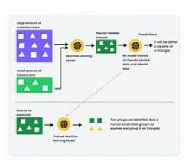

ü§ñ What is Self-Training Semi-Supervised Learning?
Self-training is a simple yet powerful technique used in semi-supervised learning, where the model learns from a small labeled dataset and leverages a larger unlabeled dataset to improve its performance.
The main idea is to iteratively expand the labeled data by using the model’s own confident predictions as "pseudo-labels" on the unlabeled data.
üìö Detailed Concept
Initially, a supervised model is trained using the labeled data available. This model is then used to predict labels on the unlabeled dataset.
From these predictions, only those with high confidence are selected and treated as labeled data (pseudo-labels). These pseudo-labeled samples are added to the labeled dataset, and the model is retrained on this larger dataset.
This cycle repeats, progressively improving the model’s accuracy by making use of previously unlabeled data.
üß© Uses of Self-Training
- To reduce the amount of manual labeling required in supervised learning.
- Improve model performance when labeled data is scarce but unlabeled data is abundant.
- Useful in scenarios where labeling is expensive, time-consuming, or requires expert knowledge.
üöÄ Applications
- Natural Language Processing: Text classification, sentiment analysis, named entity recognition.
- Computer Vision: Image classification, object detection with limited labeled images.
- Speech Recognition: Improving accuracy using unlabeled audio data.
- Healthcare: Medical image analysis where labeled data is limited due to privacy and expertise.
üñºÔ∏è Visualization

Visualization of Self-Training Workflow: The model trains on labeled data, predicts on unlabeled data, selects confident predictions as pseudo-labels, then retrains on the expanded dataset.
✅ Advantages
- Efficiently uses unlabeled data, reducing labeling costs.
- Simple and easy to implement with existing supervised models.
- Can significantly improve performance over purely supervised learning in low-label scenarios.
⚠️ Limitations
- Incorrect pseudo-labels can accumulate, causing error propagation and model degradation.
- Requires careful tuning of confidence thresholds to select reliable pseudo-labels.
- Can be sensitive to the initial model quality — poor initial models reduce effectiveness.
- May need monitoring and early stopping to avoid overfitting on noisy pseudo-labeled data.